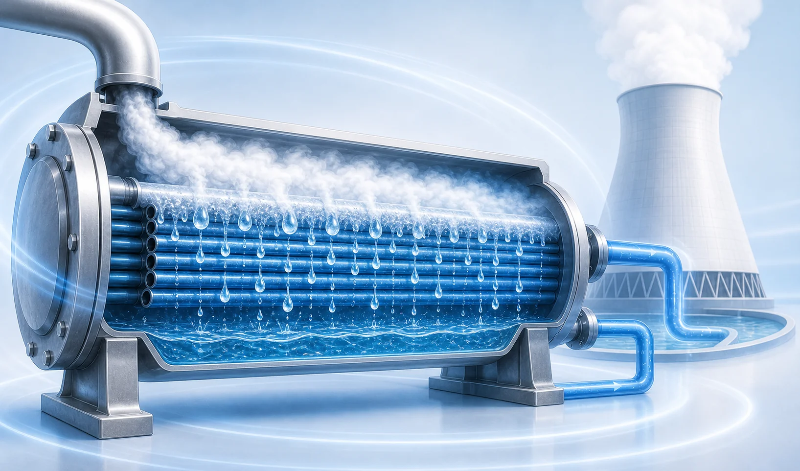
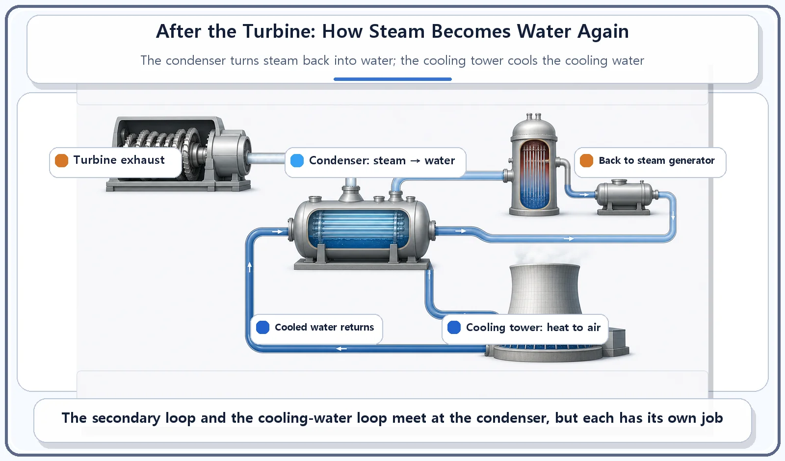
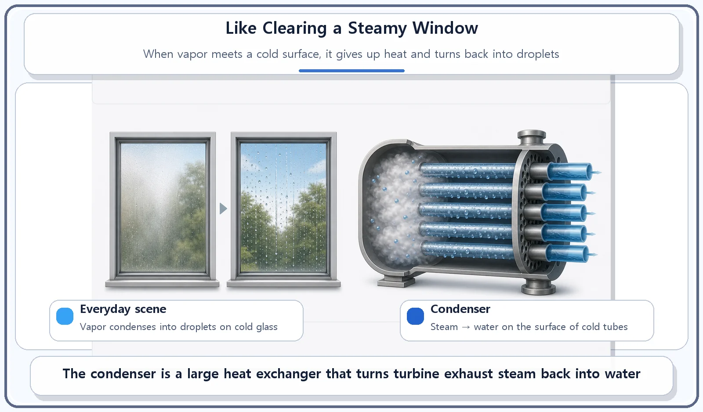

Reactor Components · 066
Clearing the Steamy Window — How the Condenser and Cooling Tower Close the Loop
Spent steam must become water again before it can go around the loop. The condenser does it; the cooling tower carries the heat away.

Steam that has finished spinning the turbine must turn back into water so it can go around again. The condenser does that by letting the steam touch tubes full of cold water; the cooling tower then sheds the heat that the cooling water picked up into the air. Neither one cools the reactor core, and the white plume from a cooling tower is just water vapor.
How do you clear a fogged-up bathroom mirror?
Take a hot shower and the bathroom window fogs over with a milky film of steam. To make the glass clear again, you splash it with cold water or let cool air flow over it. The moment the vapor touches something cold, it turns back into tiny water droplets.
Hold on to that picture, because a nuclear power plant does exactly the same thing, just on a much bigger scale. We usually follow the steam as far as the turbine, where it spins a generator and makes electricity. But the story doesn't end there. Steam that has finished its work has to turn back into water and go around again. Two pieces of equipment close that final link in the loop: the condenser and the cooling tower.
The condenser: turning steam back into water
As steam passes through the turbine and spins it, it gives up much of its energy. It leaves the turbine at a lower pressure and a lower temperature than it went in. The device that turns this spent steam back into liquid water is the condenser.
Inside the condenser is a large bundle of tubes with cold cooling water flowing through them. When the turbine exhaust steam touches the outside of these tubes, it loses heat to them, cools down, and condenses (changes from vapor back into liquid). It is the same physics as the bathroom window: cold air on the glass, and the fog becomes droplets.
The condensed water is then pumped back to the steam generator, the component that turns water into steam in the first place. That completes the secondary loop, the water-and-steam circuit on the turbine side of the plant. Thanks to the condenser, the plant doesn't need a fresh supply of water every time. The same water keeps circulating and gets reused over and over.

The cooling tower: a giant exhaust fan for warm water
The heat the condenser pulls out of the steam doesn't vanish. It moves into the cooling water flowing through the tubes. And that cooling water needs to be cooled in turn before it can be used again. That's the job of the cooling tower.
A cooling tower exposes the warmed cooling water to the open air. A common method is to let a portion of the water evaporate, which carries heat away very effectively. The heat goes into the atmosphere, and the cooled water returns to the condenser to pick up more heat. Think of the cooling tower as a very large version of the bathroom exhaust fan: it takes the warmth and moisture and sends it outside.
Not every plant uses one. If a plant sits next to a river or the sea, it may use that water directly to carry its heat away instead of building a cooling tower. So the cooling tower is best understood as one of several ways to dump the plant's leftover heat, not a component every reactor must have.

Where people get mixed up
| Equipment | What it does | Where it sits |
|---|---|---|
| Steam generator | Uses primary-loop heat to turn secondary-loop water into steam | Start of the secondary loop |
| Condenser | Turns turbine exhaust steam back into water | End of the secondary loop |
| Cooling tower | Releases the cooling water's heat into the air | Cooling-water loop (turbine side), not the reactor core |
The condenser and the steam generator sit at opposite ends of the loop. The steam generator uses heat from the primary loop (the reactor-side circuit) to turn secondary-loop water into steam. The condenser takes that steam after it has passed through the turbine and turns it back into water. One starts the cycle; the other finishes it.
The cooling tower does not cool the reactor itself. It is not a device for cooling the reactor core. It cools the condenser's cooling water, on the turbine side of the plant. And the white plume rising from a cooling tower is simply water vapor (a cloud of tiny water droplets). It has nothing to do with radioactive material. Photos of cooling towers are often mistaken for pollution, but the plume is the same kind of thing as the fog in your bathroom or your breath on a winter morning.
The short version
- The condenser lets turbine exhaust steam touch cold tubes so it condenses back into water.
- The cooling tower cools the condenser's cooling water by releasing heat into the air.
- Clearing a steamy window with cool air and condensing steam in a condenser are the same principle.
- The white plume from a cooling tower is water vapor and has nothing to do with radioactive material.
Put it all together and you can trace the whole journey: heat from the reactor becomes steam, the steam spins the turbine and makes electricity, and the condenser and cooling tower turn that steam back into water so the cycle can start again.